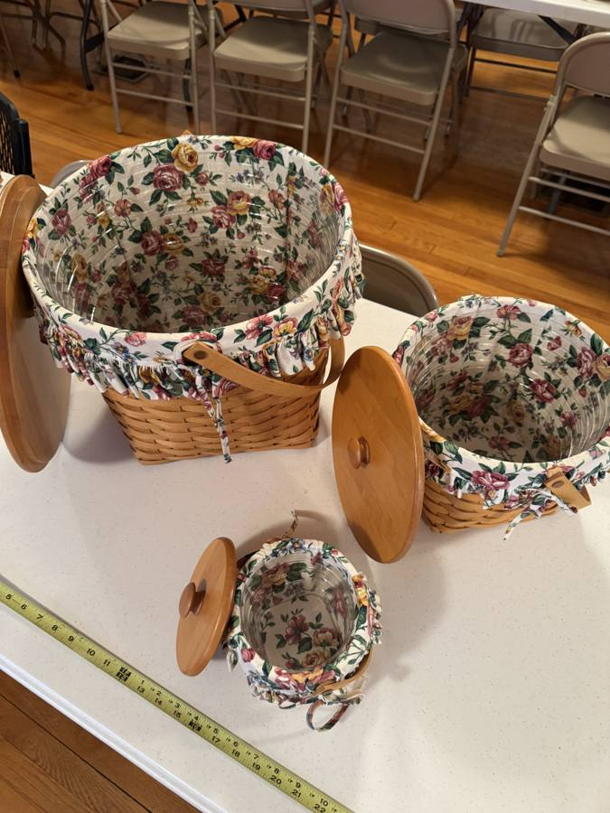
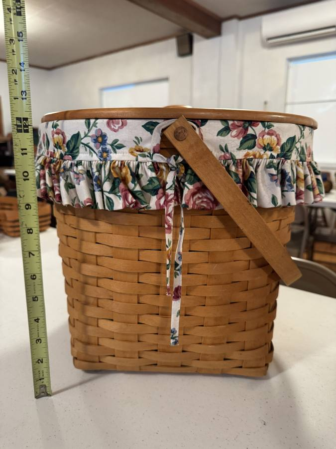
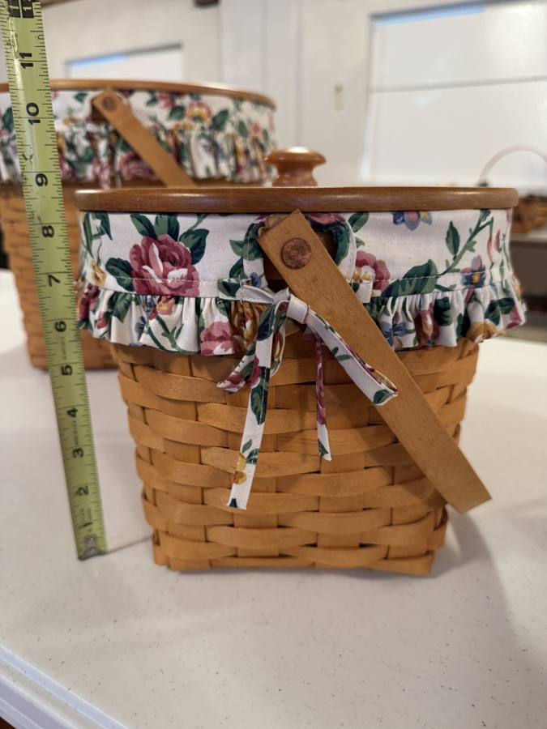
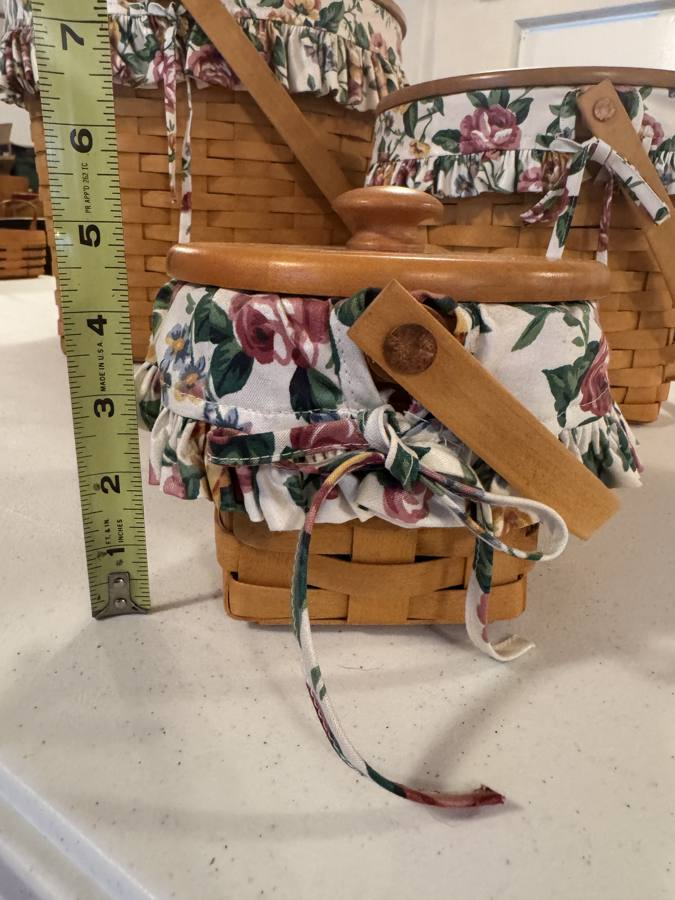
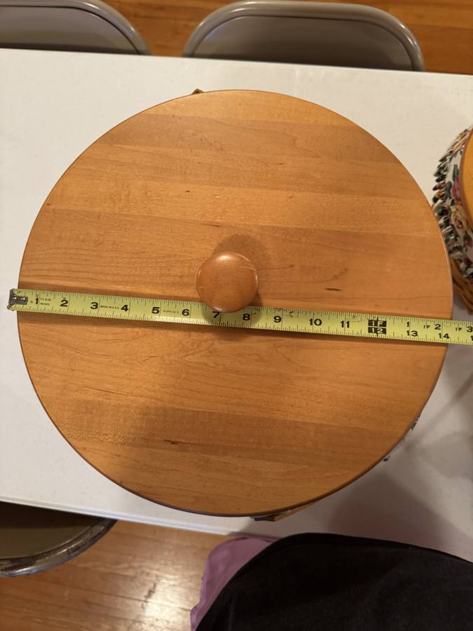
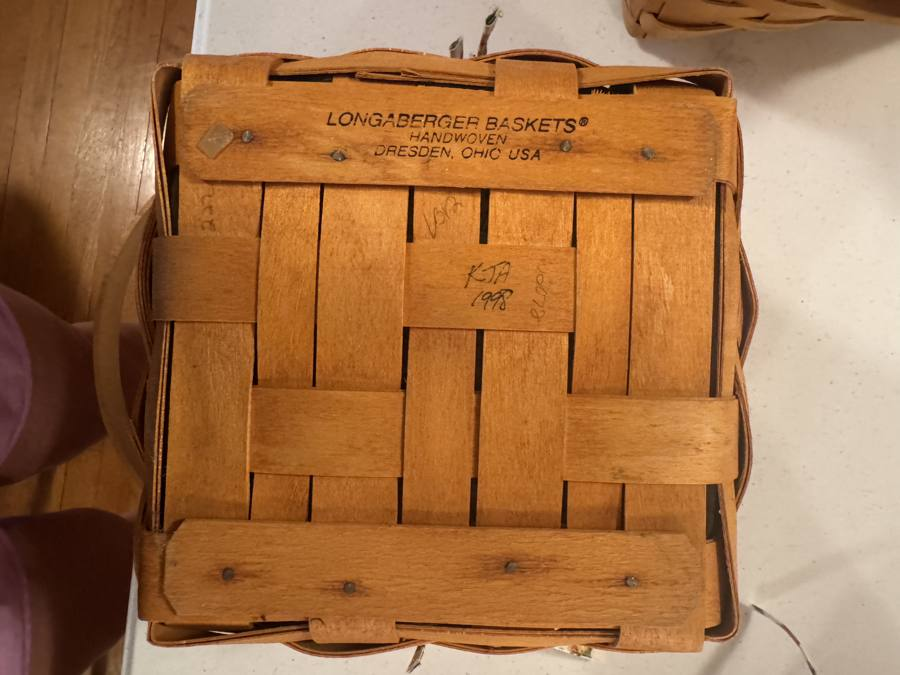
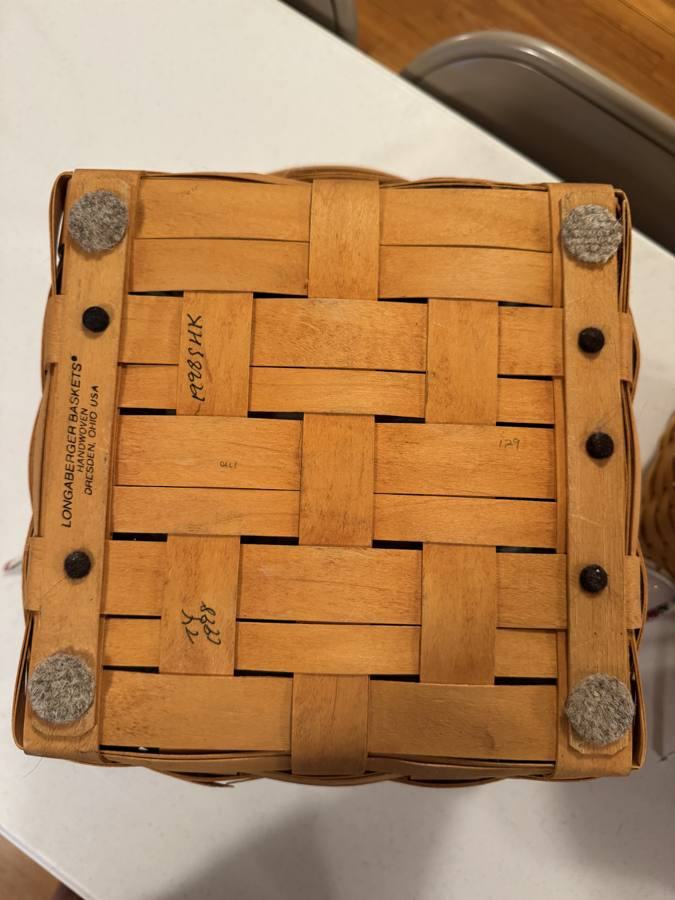
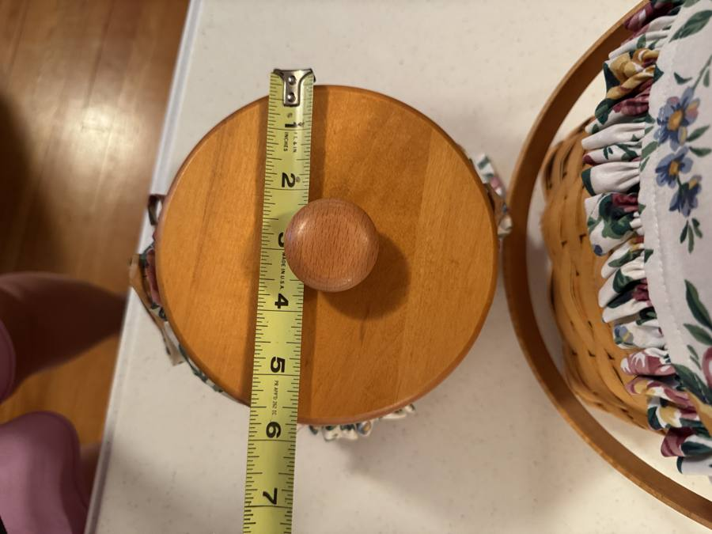
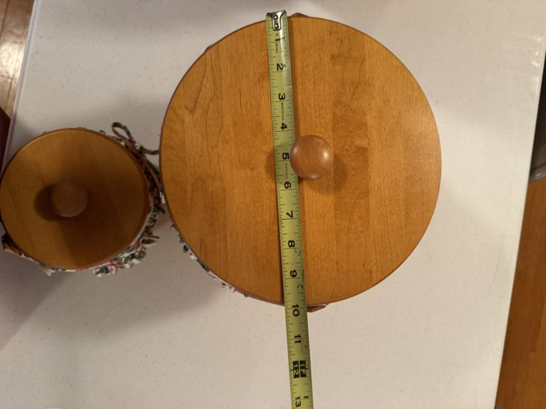
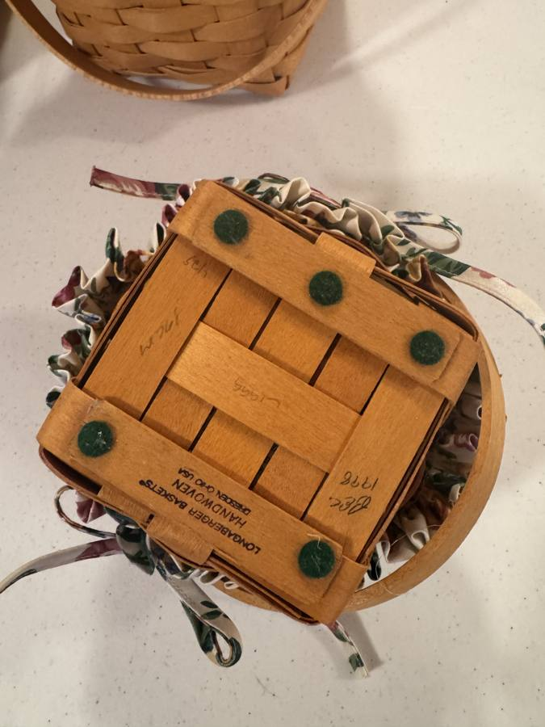

Nesting set
Graduated nesting basket set of three, with lids and liners
$63–$100










Sold as one lot of three graduated baskets, each with its own solid maple lid, swing handle and matching cabbage-rose liner. They were made to nest together and are worth more as a complete run. Individual prices are listed below if you only want one. Nesting basket, large — swing handle, wood lid: Largest of a graduated three-basket nesting set. Natural maple weave, brass tacks, wooden swing handle on wood button pivots. Solid maple lid with turned knob. Fabric liner in a cabbage-rose floral: cream ground with pink and mauve roses, yellow blooms, small blue flowers and green foliage; gathered ruffle at the rim with fabric ties. Same print across all three baskets. Also includes the fitted clear plastic protector. Approx. 8" to the rim, about 11.5" overall with the lid on. MEASURED: lid 12" diameter; overall height with lid approx. 11.5". Nesting basket, medium — swing handle, wood lid: Middle size of the graduated three-basket nesting set. Round, natural maple weave, brass tacks, wooden swing handle on wood button pivots. Solid maple lid with turned knob. Fabric liner in a cabbage-rose floral: cream ground with pink and mauve roses, yellow blooms, small blue flowers and green foliage; gathered ruffle at the rim with fabric ties. Same print across all three baskets. Also includes the fitted clear plastic protector. Approx. 6" to the rim. MEASURED: lid 9" diameter; overall height with lid approx. 7". Nesting basket, small — swing handle, wood lid: Smallest of the graduated three-basket nesting set. Round, natural maple weave, brass tacks, wooden swing handle on wood button pivots. Solid maple lid with turned knob. Fabric liner in a cabbage-rose floral: cream ground with pink and mauve roses, yellow blooms, small blue flowers and green foliage; gathered ruffle at the rim with fabric ties. Same print across all three baskets. Also includes the fitted clear plastic protector. Approx. 4" to the rim. MEASURED: lid 5.5" diameter; overall height with lid approx. 4.5". Five green felt pads applied to the underside (appear owner-added).
Condition Nesting basket, large — swing handle, wood lid - Weave tight and evenly colored, no lifted or broken splints. Fabric bright and unfaded, no staining. Lids and handles unmarked. Nesting basket, medium — swing handle, wood lid - Weave tight and evenly colored, no lifted or broken splints. Fabric bright and unfaded, no staining. Lids and handles unmarked. Nesting basket, small — swing handle, wood lid - Weave tight and evenly colored, no lifted or broken splints. Fabric bright and unfaded, no staining. Lids and handles unmarked.
Sold as one lot
If you would rather buy a single piece, these are the individual prices. Just ask.
| Nesting basket, large — swing handle, wood lid | $25–$40 |
| Nesting basket, medium — swing handle, wood lid | $20–$32 |
| Nesting basket, small — swing handle, wood lid | $18–$28 |
| Year | 1998 |
|---|
| Size | L 12" × W 12" × H 11.5" |
|---|
| Pieces | 3 |
|---|
| Condition | Excellent |
|---|
| Weaver mark | KJA 1998 -or- approx. HK 1998 (see notes) |
|---|
| Includes | Lid, Protector, Liner |
|---|
| Collection | Nesting set |
|---|
| Group | Floral Nesting Set |
|---|
Item reference LOT-002